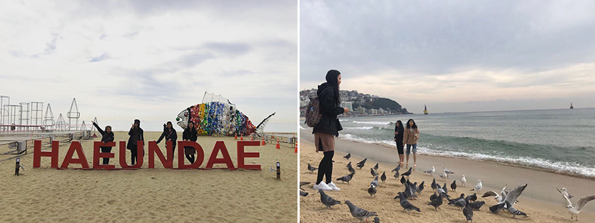
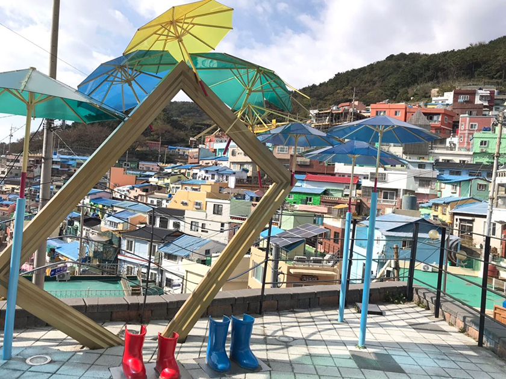
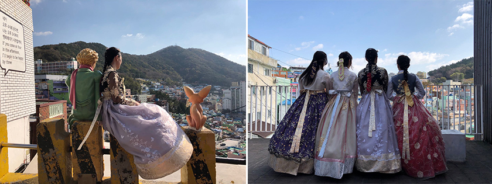
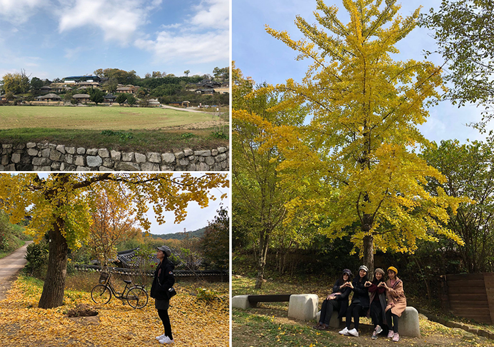
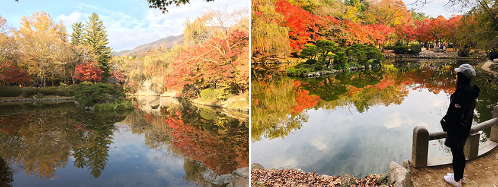
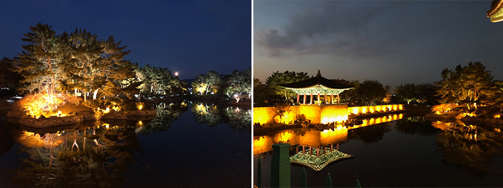

釜山，韓國的第二大城同時也是一個臨海城市，類似於高雄之於台灣的地位，因此第一天抵達熟悉了環境之後，第二天立刻前往知名景點—海雲台，享受陽光、沙灘、海鷗。
|  |
即使已入秋，海雲台的遊客還是絡繹不絕，來之前就有聽說海雲台的海鷗不怕人，可以在旁邊的便利商店買韓國的蝦味仙誘惑海鷗來場近距離接觸，我們也依照部落客說的在海邊用蝦味仙吸引海鷗，結果不只海鷗過來了，更多的鴿子也聞食物而來，體驗被飢餓的鳥類圍繞的感覺。
另一個必去景點是甘川洞文化村，位於山坡上的小聚落以五顏六色的房屋聞名，背後的歷史卻曾是戰爭時期人民的避難所、戰後因處山坡上交通不便逐漸走向貧窮和衰落，但是在經過韓國政府近年來藝術村落發展政策之下，形成了現在充滿藝術氣息的甘川洞文化村。
|  |
小王子和小狐狸雕像是甘川洞文化村地標性的存在，雖然這裡不是古蹟，沒有走入歷史的時代感，穿著韓服在五彩繽紛的村落也是截然不同的體驗。
|  |
這次釜山行剛好挑了個秋高氣爽、正逢楓葉轉紅的時間，因此我們安排了慶州一日遊行程，慶州是韓國重要的歷史古都，曾是新羅王國的首都，慶州市內也有佛國寺、石窟庵等文化遺產，距離釜山車程約兩小時並不會很遠。
慶州一日遊第一站是良洞村，是一座貴族的宗族村莊，保留了大量的文化遺產，良洞村雖然不大，也沒有華麗的建築和裝飾，但銀杏樹圍繞的清幽環境，加上傳統建築更是讓人想在這世外桃源般的地方長住。
|  |
第二站是佛國寺，佛國寺始建於西元六世紀，為新羅國王為推廣佛教作為國教所建，若是其他季節去佛國寺，可能會專注於歷史文化方面，像是佛教對於韓國的影響，但是當你在有楓紅的時候參觀佛國寺，將完全被寺廟外的景色所吸引！我們去佛國寺的那天非常地幸運，天氣很好也看到許多已轉紅的楓葉，就連一日遊的導遊也說是他今年去佛國寺看到最美的一次！
|  |
最後一站是雁鴨池，又稱東宮與月池，是新羅時代宮殿中最雄偉並擁有蓮花池的地方。晚上是參觀雁鴨池最推薦的時間，因為能看到打燈後建築物和樹木在池裡的倒影，是城市中難得的一個古蹟夜景景點。
|  |
最後談談這次的釜山行，沒有首爾、東京的繁華和京都、大阪的名氣，平易近人是釜山留給我的印象，其中像城市裡的步調、市區內許多的斜坡路、主動上前關心要幫我們找路的阿珠媽、美味的韓式炸雞和意外合我們胃口的韓國食物小吃，都讓我感覺到像是身在台灣的親切感，也因為釜山的平易近人，使我意猶未盡地想再次拜訪釜山和周圍城市，不管是釜山市內或是鄰近的大邱、慶州都還有許多旅遊景點值得去探索，也想看看這座城市不同季節的面貌，期待下一次的釜山行！